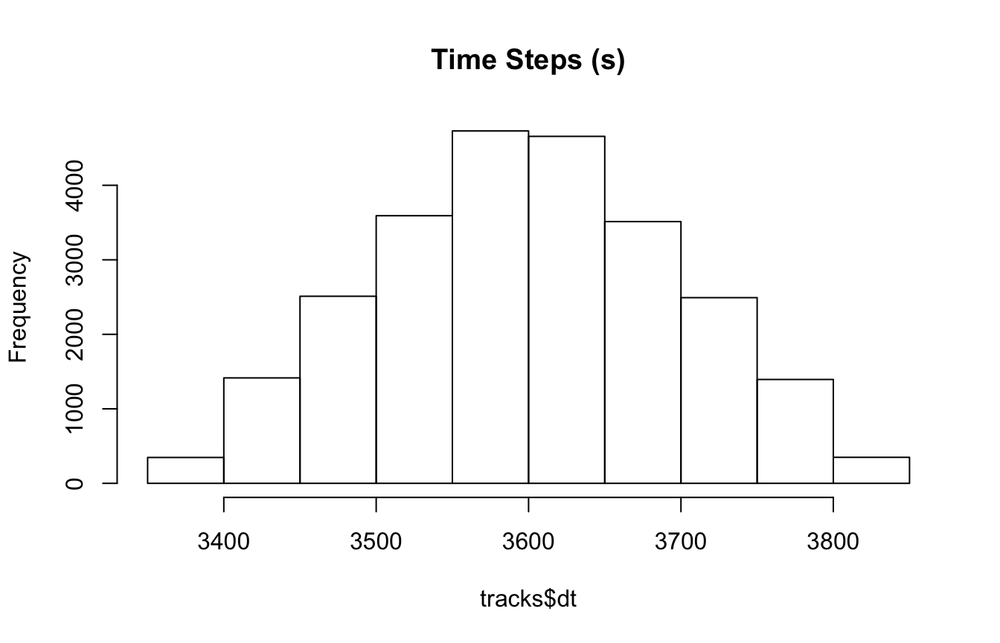
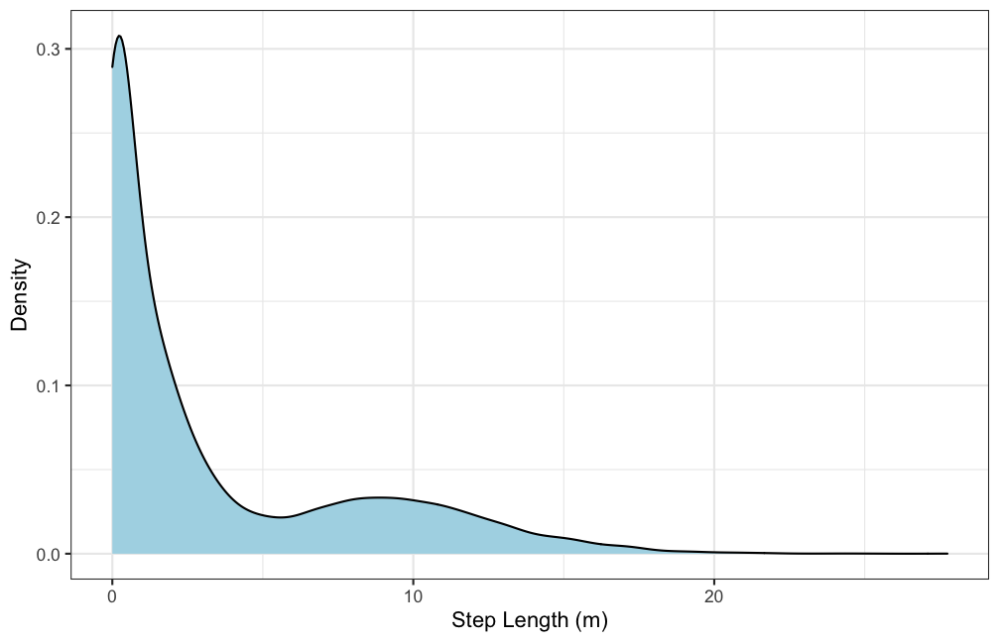
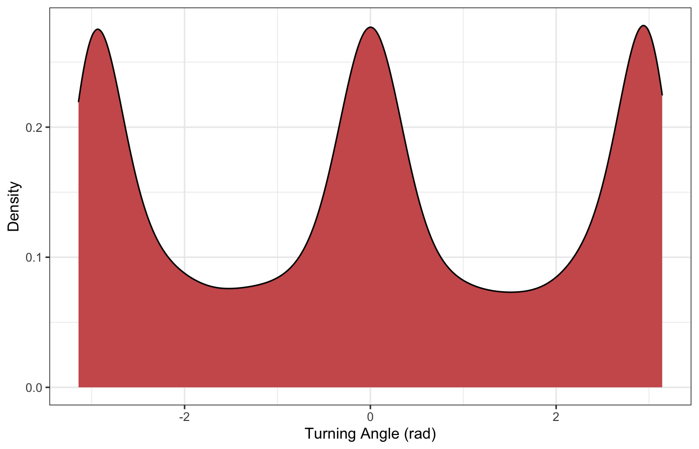
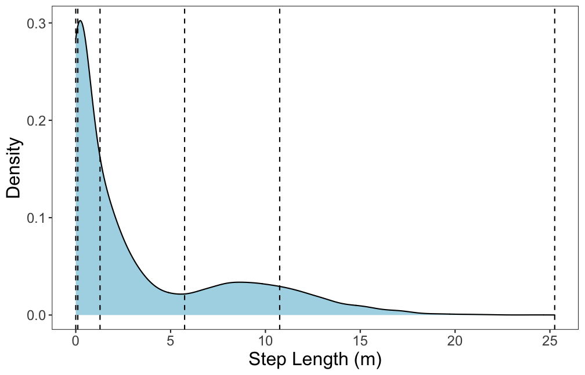
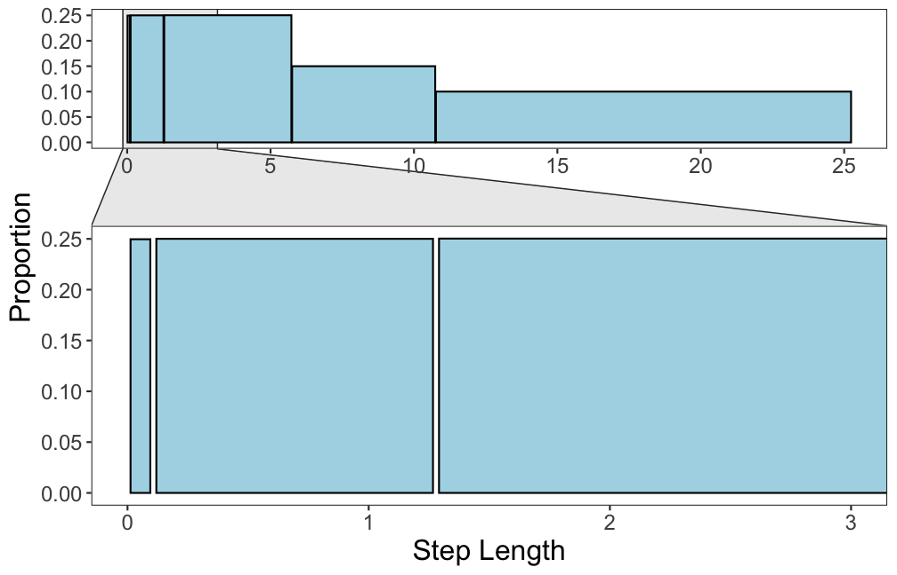
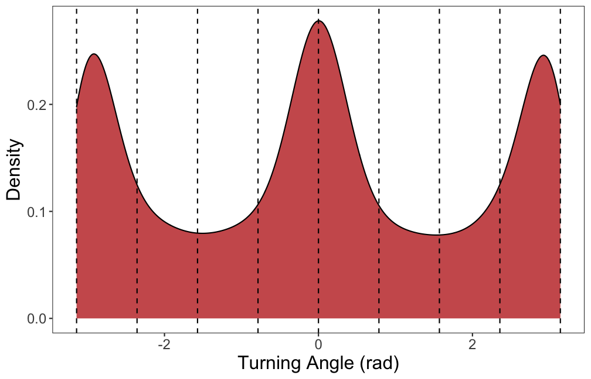
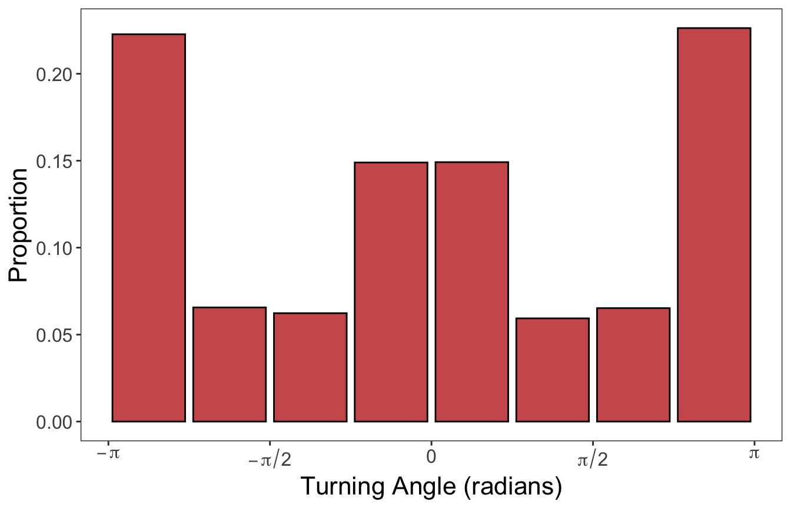

Prepare data for analysis
13 July 2020
Source:vignettes/Prepare-data-for-analysis.Rmd
Prepare-data-for-analysis.RmdIntroduction
In order to estimate behavioral states from telemetry (and biologging data) using this non-parametric Bayesian framework, the data must be formatted in a certain way to run properly. This especially applies to the initial analysis of the raw data by the segmentation model. This tutorial will walk through the different steps of preparing the raw telemetry data for analysis by the models within bayesmove.
But first…
Before we begin in earnest, the practitioner must make sure the data have been cleaned. This includes the removal of duplicate observations and sorting the observations in consecutive order per animal ID. At a minimum, an object of class data.frame with columns for animal ID, date, x coordinate (e.g., longitude, Easting), and y coordinate (e.g., latitude, Northing) must be included.
Calculating step lengths, turning angles, and time steps
In many cases, step lengths and turning angles are used to estimate latent behavioral states from animal movement. Since these metrics are only directly comparable if measured on the same time interval, it is also important to calculate the time step between succesive osbervations since only those at the primary time step of interest will be retained for further analysis.
First, let’s take a look at what the data should look like before calculating these movement variables:
library(bayesmove) library(tidyverse) #to use functions for data wrangling and visualization library(viridis) #to use color palettes # Load data data(tracks) # Check data structure head(tracks) #> id date x y #> 1 id1 2020-07-02 11:59:41 0.00000 0.0000000 #> 2 id1 2020-07-02 12:58:26 10.56492 -1.6654990 #> 3 id1 2020-07-02 13:59:31 25.50174 -0.6096675 #> 4 id1 2020-07-02 15:01:27 31.22014 9.5438464 #> 5 id1 2020-07-02 15:59:56 36.15821 19.8737009 #> 6 id1 2020-07-02 16:58:38 39.06810 26.4996352 str(tracks) #> 'data.frame': 25005 obs. of 4 variables: #> $ id : chr "id1" "id1" "id1" "id1" ... #> $ date: POSIXct, format: "2020-07-02 11:59:41" "2020-07-02 12:58:26" ... #> $ x : num 0 10.6 25.5 31.2 36.2 ... #> $ y : num 0 -1.67 -0.61 9.54 19.87 ...

We can see that ‘date’ is in a POSIXct format and that the x and y coordinates are stored as numeric variables. Techincally, the coordinates can be in a lat-lon format, but this will make interpretation of step lengths more difficult since they will be recorded in map units. Therefore, it is suggested that x and y coordinates are in a UTM projection where the unit of measure is meters. The ‘id’ column can be stored either as character or factor.
Now, let’s calculate step length, turning angle, and time step:
tracks<- prep_data(dat = tracks, coord.names = c("x","y"), id = "id") head(tracks) #> id date x y step angle dt #> 1 id1 2020-07-02 11:59:41 0.00000 0.0000000 10.695 NA 3526 #> 2 id1 2020-07-02 12:58:26 10.56492 -1.6654990 14.974 0.227 3664 #> 3 id1 2020-07-02 13:59:31 25.50174 -0.6096675 11.653 0.987 3716 #> 4 id1 2020-07-02 15:01:27 31.22014 9.5438464 11.449 0.067 3509 #> 5 id1 2020-07-02 15:59:56 36.15821 19.8737009 7.237 0.032 3522 #> 6 id1 2020-07-02 16:58:38 39.06810 26.4996352 0.119 -2.804 3738
The new tracks data frame has three new columns (‘step’, ‘angle’, and ‘dt’), which store the data for step lengths, turning angles, and time steps, respectively. Since this example uses coordinates that are considered to be in a UTM projection, step lengths are reported in meters. Turning angles are reported in radians and time steps are reported in seconds. Alternatively, these measures can also be calculated using functions from other R packages, such as adehabitatLT.
Round times and filter observations
Next, we want to filter the data so that we only retain data for a given time step (or interval). Let’s look at a distribution of the time steps that were just calculated:

Based on this histogram, it appears that 3600 s (1 hour) is likely the primary time step, where some observations slightly deviate from this exact interval. I will now round all time steps (dt) and dates to reflect this rounding of times within a given tolerance window. In this example, I will choose 3 minutes (180 s) as the tolerance on which to round observations close to the primary time interval (3600 s).
tracks<- round_track_time(dat = tracks, id = "id", date = "date", dt = "dt", int = 3600, tol = 180, time.zone = "UTC") head(tracks) #> id date x y step angle dt #> 1 id1 2020-07-02 12:00:00 0.00000 0.0000000 10.695 NA 3600 #> 2 id1 2020-07-02 13:00:00 10.56492 -1.6654990 14.974 0.227 3600 #> 3 id1 2020-07-02 14:00:00 25.50174 -0.6096675 11.653 0.987 3600 #> 4 id1 2020-07-02 15:00:00 31.22014 9.5438464 11.449 0.067 3600 #> 5 id1 2020-07-02 16:00:00 36.15821 19.8737009 7.237 0.032 3600 #> 6 id1 2020-07-02 17:00:00 39.06810 26.4996352 0.119 -2.804 3600 # How many different time steps? n_distinct(tracks$dt) #> [1] 114 # How many observations of each time step? hist(tracks$dt, main = "Rounded Time Steps (s)")

It looks like nearly all observations had a time step within the tolerance limit. Now the dataset needs to be filtered to only include observations where dt == 3600.
# Create list from data frame tracks.list<- df_to_list(dat = tracks, ind = "id") # Filter observations tracks_filt.list<- filter_time(dat.list = tracks.list, dt = "dt", tstep = 3600) # View sample of results head(tracks_filt.list[[3]]) #> id date x y step angle dt obs #> 1 id3 2020-07-02 12:00:00 0.000000e+00 0.000000e+00 0.000 NA 3600 1 #> 2 id3 2020-07-02 13:00:00 -6.164902e-05 -6.576507e-05 0.145 2.728 3600 2 #> 3 id3 2020-07-02 14:00:00 1.336034e-01 5.716719e-02 0.001 -2.109 3600 3 #> 4 id3 2020-07-02 15:00:00 1.335014e-01 5.640661e-02 3.321 -0.842 3600 4 #> 5 id3 2020-07-02 17:00:00 -2.601031e+00 -1.807549e+00 11.272 0.120 3600 6 #> 6 id3 2020-07-02 18:00:00 8.594375e+00 -4.939411e-01 0.000 2.125 3600 7 #> time1 #> 1 1 #> 2 2 #> 3 3 #> 4 4 #> 5 5 #> 6 6 # Check that only observations at 1 hour time steps are retained per ID purrr::map(tracks_filt.list, ~n_distinct(.$dt)) #> $id1 #> [1] 1 #> #> $id2 #> [1] 1 #> #> $id3 #> [1] 1 #> #> $id4 #> [1] 1 #> #> $id5 #> [1] 1
There are also two new columns that have been added to the data frame of each ID: ‘obs’ and ‘time1’. The ‘obs’ column holds the number of the observation before the data were filtered, whereas ‘time1’ stores the number of the observation after filtering. This is important since the ‘obs’ column will allow the merging of results from this model with that of the original data and the ‘time1’ column will be used to segment the tracks.
Discretize movement variables
The unique feature of this modeling framework is that it does not rely upon standard parametric density functions that are used in nearly every other model that estimates behavior. This is expected to reduce any constraints posed by the selection of a given parametric density function and allow for greater model flexibility. However, this does require the user to define the number of bins for each variable and how they will be discretized.
Let’s first take a look at how step lengths and turning angles are distributed:

We can see that step lengths are highly right-skewed whereas turning angles are a little more balanced despite having peaks at \(-\pi, 0\), and \(\pi\) radians. These distributions will inform how we discretize these variables.
An example is included below for the discretization of step lengths and turning angles, but this can be performed in many different ways.
# Define bin number and limits for turning angles angle.bin.lims=seq(from=-pi, to=pi, by=pi/4) #8 bins # Define bin number and limits for step lengths max.dist=max(tracks[tracks$dt == 3600,]$step, na.rm = T) dist.bin.lims=quantile(tracks[tracks$dt == 3600,]$step, c(0,0.25,0.50,0.75,0.90), na.rm=T) dist.bin.lims=c(dist.bin.lims, max.dist) #5 bins angle.bin.lims #> [1] -3.1415927 -2.3561945 -1.5707963 -0.7853982 0.0000000 0.7853982 1.5707963 #> [8] 2.3561945 3.1415927 dist.bin.lims #> 0% 25% 50% 75% 90% #> 0.000 0.075 1.075 5.274 10.511 25.252
Bins were defined in different ways for each movement variable due to their inherent properties. Step lengths were broken into 5 bins (6 limits) using quantiles, which assisted in creating a more balanced distribution of bins since step lengths are typically right-skewed. Only step lengths that were observed at the primary time interval (3600 s; 1 h) were used to calculate quantiles. Since turning angles are already relatively balanced, these were separated into 8 bins (9 limits) of equal width centered at 0 radians (from \(-\pi\) to \(\pi\)). The following code shows how to use these limits to discretize the data:
# Assign bins to observations tracks_disc.list<- map(tracks_filt.list, discrete_move_var, lims = list(dist.bin.lims, angle.bin.lims), varIn = c("step", "angle"), varOut = c("SL", "TA"))
The plots below show the limits used to define the bins for each continuous variable, as well as what these distributions look like after discretization. First, step lengths will be shown:

And next the plots for turning angles:

The data are now in the proper format to be analyzed by the segmentation model within bayesmove. While these bin limits are suggested as default settings, they are by no means the only way to discretize the data. This may require trial and error after viewing results from the segmentation model.